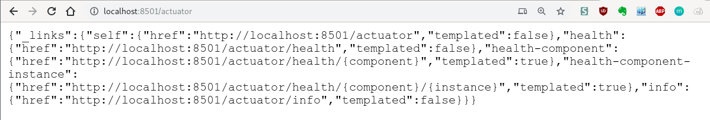

Create Spring Boot project
使用到的相关版本:
jdk 1.8
IDE(VSCode or IDEA)
Spring Boot 2.1.1
使用 IDEA
新建 Spring Initializr 项目
packing 要选 jar
勾选 Web MySQL MyBatis 依赖
使用 VSCode
Install Extension: Java Development pack.
Press Ctrl+Shift+P to call Spring Initializer. It will automatically guide you to set ArtifactId, GroupId, package name, etc. Here I use Maven and set groupId “com.wsd”, artifactId “springweb” and the default name is “demo”.
A simple Spring Boot Web application
You will see src/java/com/wsd/springweb/DemoApplication.java, Edit it:
1 | package com.wsd.springweb; |
JavaBean 函数 commandLineRunner 的作用是通过运行一个匿名函数，输入Application中所有的 Bean（包括由当前App生成的和自动添加到Spring Boot中去的）
src/java/com/wsd/springweb/DemoController.java
1 | package com.wsd.springweb; |
src/java/com/wsd/springweb/application.properties1
server.port=8501
Maven compile and package
Run the .jar

And you can retrive the string by visiting the webpage
Add Unit Test
src/java/com/wsd/springweb/DemoControllerTest.java
1 | package com.wsd.springweb; |
a MockMvc object will mimic a mvc controller accessing the specified URL, then check whether the result is right.
注解 @RunWith(SpringRunner.class) 开启了 Run Test 功能。
注解 @SpringBootTest(webEnvironment = SpringBootTest.WebEnvironment.RANDOM_PORT) 搭建出了网络环境
随机端口测试
src/java/com/wsd/springweb/DemoControllerIT.java
1 | package com.wsd.springweb; |
Add production-grade services
Before adding

After adding
<dependency>
<groupId>org.springframework.boot</groupId>
<artifactId>spring-boot-starter-actuator</artifactId>
</dependency>
into pom.xml file
多了一行
2019-11-08 21:10:31.858 INFO 104665 --- [main] o.s.b.a.e.web.EndpointLinksResolver :
Exposing 2 endpoint(s) beneath base path '/actuator'
接下来便可以访问 http://localhost:8501/actuator
